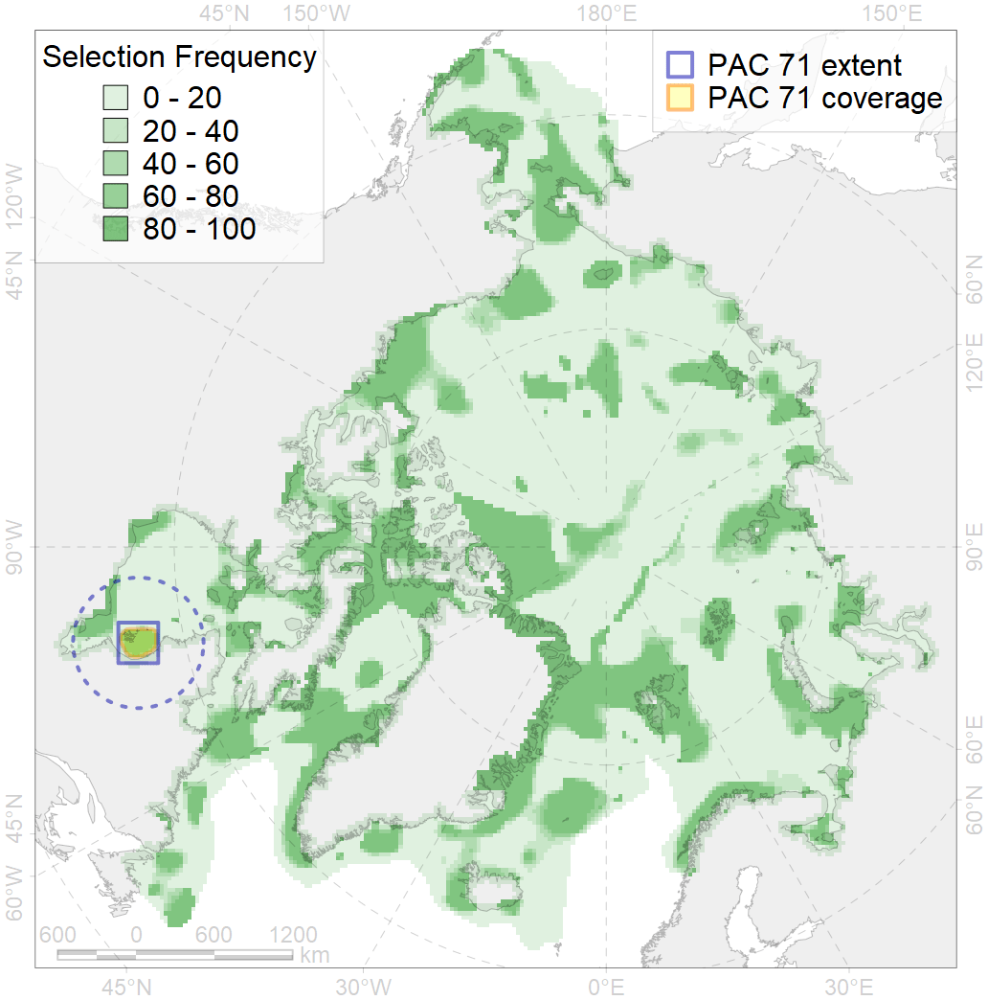
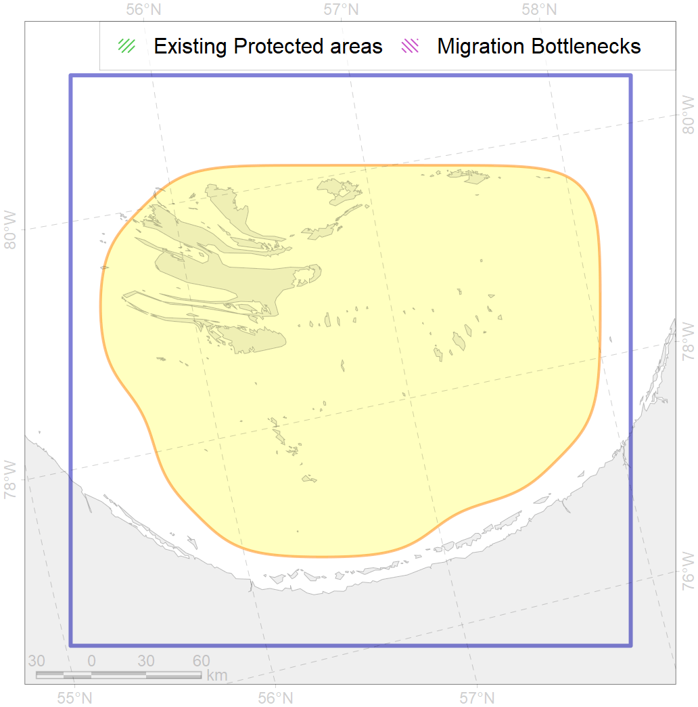

71
For more information regarding this PAC and to conduct custom spatial analysis using the PAC data or any spatial query, please consult Accenter.

0
CFs entirely within the PAC area
3
CFs at least 25% within the PAC area
3
CFs with at least 50% of their target achieved in the PAC
4
CFs with at least half of their target achieved in the PAC
| CF ID | CF Name | Proportion in the PAC | Conservation Target | Contribution to ArcNet Target Achievement | PAC’s Contribution to the Achieved Target |
|---|---|---|---|---|---|
| 6065 | Common eider (Somateria mollissima sedentari) Hudson Baywintering grounds | 88.5% | 82.8% | 104.9% | 97.1% |
| 5013 | Beluga of the Eastern Hudson Bay summer core distribution | 69.9% | 72.0% | 91.3% | 90.7% |
| 7030 | James Bay enclave | 29.0% | 18.9% | 145.3% | 49.5% |
| 6072 | King eider (Somateria spectabilis) Canadian winetring grounds | 20.1% | 48.0% | 41.5% | 35.8% |
| 7168 | IV.2.1. shallow James Bay | 17.1% | 6.1% | 264.6% | 31.4% |
| 9017 | polar bear of the SH (Southern Hudson Bay) subpopulation distribution | 13.4% | 32.4% | 39.9% | 33.9% |
| 1003 | Atlantic Walrus Wintering Areas in Canada | 11.5% | 67.2% | 17.0% | 14.9% |
| 9035 | polar bear denning areas of SH (Southern Hudson Bay) subpopulation | 10.6% | 64.8% | 16.4% | 14.0% |
| 4031 | Feeding area of the Brook Trout (Salvelinus fontinalis) | 6.3% | 14.4% | 40.0% | 16.6% |
| 4007 | Feeding/nursery area of the Cisco (Coregonus artedi) | 5.1% | 32.4% | 14.6% | 10.2% |
| 2010 | Bearded seal whelping areas in the Hudson Bay | 4.1% | 24.0% | 15.9% | 15.9% |
| 4048 | Feeding/nursery area of the ogac (Gadus ogac ) | 3.7% | 12.0% | 29.0% | 7.2% |
| 4075 | Fish zoogeography, Arctic Region, High-Arctic Shelf Province, Hudson District | 3.7% | 9.0% | 38.2% | 13.7% |
| 2048 | Ringed seal whelping areas in the Hudson Bay area | 3.6% | 24.0% | 14.2% | 13.3% |
| 1002 | Atlantic Walrus Summer Distribution in Canada | 2.7% | 33.6% | 7.7% | 5.3% |
| 2019 | Harbour seal range in the North Atlantic region | 2.4% | 6.0% | 37.0% | 5.6% |
| 4028 | Feeding/migration area of the Atlantic salmon (Salmo salar) American populations | 2.1% | 12.0% | 16.4% | 5.3% |